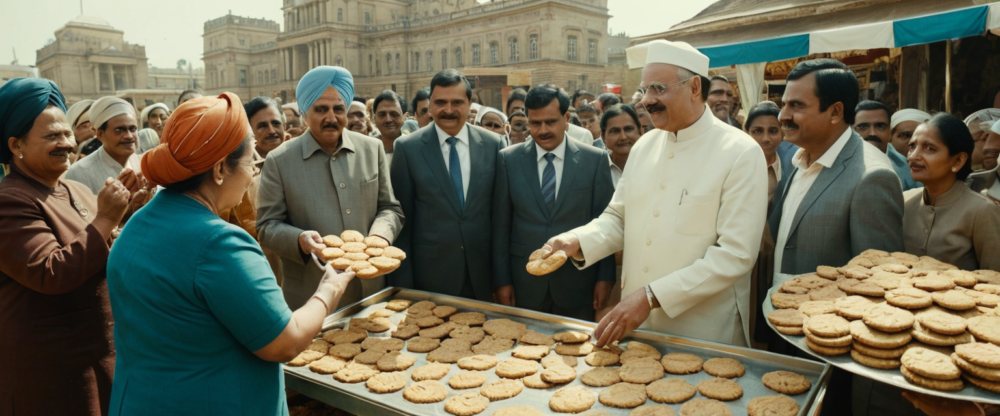

Gobierno reemplaza moneda nacional por galletas: "Son deliciosas y tienen valor real"
En un movimiento que ha dejado a economistas con la boca abierta (y llena de migas), el gobierno ha anunciado hoy que reemplazará la moneda nacional por galletas. El Ministro de Economía, Don Chispas de Chocolate, declaró en una conferencia de prensa: "Son deliciosas y tienen valor real. 쯈uién no querría ser rico en galletas?"
Según el plan, diferentes tipos de galletas representarán distintas denominaciones. Las galletas de avena serán el equivalente a monedas de bajo valor, mientras que las galletas con chispas de chocolate representarán los billetes de alta denominación. Las codiciadas galletas de mantequilla importadas de Dinamarca se utilizarán para transacciones internacionales.
El anuncio ha generado reacciones mixtas. La Dra. María Crema, experta en economía de la Universidad de Repostería, comentó: "Este movimiento podría resolver la inflación y el hambre al mismo tiempo. Es brillante o completamente loco, aún no lo he decidido".
Los bancos están luchando para adaptar sus cajeros automáticos para dispensar galletas frescas, mientras que los supermercados han visto un aumento masivo en la demanda de leche. "Si las galletas son dinero, entonces la leche es básicamente combustible para la economía", explicó Juan Lácteo, dueño de una tienda local.
Sin embargo, no todos están contentos con el cambio. La Asociación de Dietistas ha expresado su preocupación por el potencial aumento de diabetes en la población. "Estamos al borde de una crisis de salud pública. 쮺칩mo se supone que mantengamos una dieta equilibrada cuando nuestro salario es literalmente azúcar y harina?", protestó la Dra. Ana Zanahoria.
Mientras tanto, el mercado negro ya ha comenzado a florecer, con informes de galletas caseras falsificadas circulando en el sistema financiero. El gobierno ha respondido estableciendo una fuerza especial de catadores para autenticar la moneda oficial.
A medida que la nación se adapta a su nueva realidad económica, una cosa es cierta: el futuro financiero del país nunca había sido tan dulce... o crujiente.